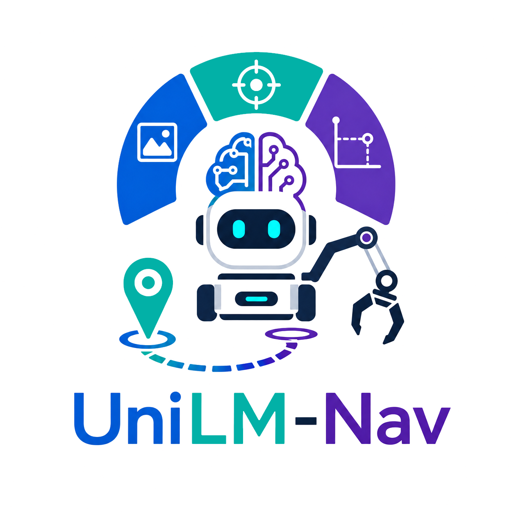
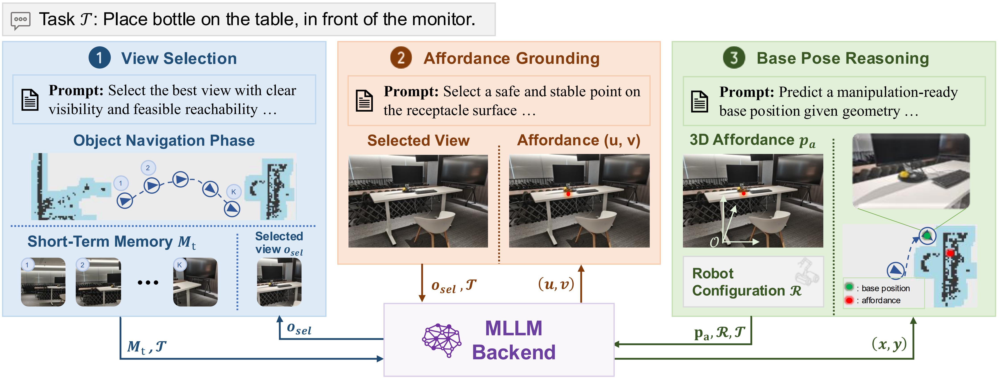

UniLM-Nav: A Unified Framework for Zero-Shot Last-Mile Navigation
TL;DR: UniLM-Nav is a zero-shot MLLM framework that bridges object navigation and manipulation by selecting task-relevant views, grounding affordances, and reasoning about manipulation-ready base poses for open-vocabulary mobile manipulation.
Abstract
Mobile manipulation requires a robot to navigate to a target object or receptacle and then perform intended manipulation. However, reaching the vicinity of the target does not guarantee a manipulation-ready base pose, a problem known as last-mile navigation. Prior methods for last-mile navigation either rely on manual pose annotation or task-specific training, limiting their scalability to open-vocabulary settings with fine-grained spatial constraints.
We propose UniLM-Nav, a unified framework for zero-shot open-vocabulary last-mile navigation. UniLM-Nav decomposes last-mile navigation into view selection, task-conditioned affordance grounding, and geometry-aware base-pose reasoning, all resolved with a shared multimodal large language model (MLLM) backend. Specifically, UniLM-Nav first selects a reference view that best captures the target object or receptacle from recently collected observations. It then grounds task-relevant affordance point in the selected view and lifts the result into the robot-centric coordinate frame. Finally, conditioned on the grounded affordance, task context, and robot geometry, it infers a manipulation-ready base pose for the robot.
We evaluate UniLM-Nav on the OVMM benchmark where it outperforms the previous state-of-the-art method, MoTo, by 3.13 percentage points. Analyses show that the components of our method are crucial to final performance, and that the choice of MLLM also has a substantial effect. We further deploy UniLM-Nav on a Unitree B2 quadruped robot with a 6-DoF Unitree Z1 manipulator, validating its applicability to real-world mobile manipulation tasks.

Method

BibTeX
@misc{zhang2026unilmnav,
title={UniLM-Nav: A Unified Framework for Zero-Shot Last-Mile Navigation},
author={Zhang, Zhuofan and Wang, Tianxu and Zhang, Guoxi and Lin, Yixiong and Wang, Xilin and Xu, Hongming and Li, Qing and Zhu, Song-Chun and Fan, Lifeng},
year={2026},
eprint={2607.06537},
archivePrefix={arXiv},
primaryClass={cs.RO},
url={https://arxiv.org/abs/2607.06537},
}